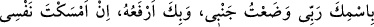
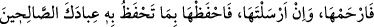

Rabbim senin isminle yatağıma yattım, yine senin isminle yatağımdan kalkarım.
Eğer uykuda canımı alacaksan, bana merhamet edip bağışla! Şayet salıverecek
olursan, iyi kullarını muhafaza ettiğin gibi beni de fenalıklardan koru!”[122]
Bu hadîste hayatın gerçek maksadının sâlihlik olduğuna, bunun dışındaki şeylerin ise
onu elde etmenin bir vesilesi olduğuna işâret vardır.
“Şüphe yok ki, bunda” yâni, bahsi geçen iki tür can almada, bunlardan birincisinde
ruhu tutulurken diğerinde salıverilmesinde; ruhlarla bedenler arasında nasıl bir bağlantı
olduğu, bâzen ruhların ölüm esnâsındaki gibi tamamen kabzedilmesi, ölümden sonra ise
bedenlerin fani oluşuyla fânî olmayarak bâkî olarak tutulması ve ruhların saîd ve şakî
olması, bâzen uyku esnâsındaki gibi sâdece zâhirlerinin kabz edilmesi, sonra da
ecellerinin sona erip nefeslerinin tükenişine kadar zaman zaman salıverilmesi üzerinde
“iyi düşünecek bir kavim için” Allah’ın kudretinin ve hikmetinin kemâline ve
rahmetinin ne kadar kapsayıcı olduğuna delâlet eden hayret verici “ibretler vardır.”
el-Kevâşî’de der ki: “İyi düşünecek” ve böyle bir şeye kâdir olanın yeniden
diriltmeye (ba’s) de kâdir olduğu sonucunu çıkarabilen “bir kavim için ibretler vardır.”
Nitekim Kâşifî de şöyle der: “Uykuya benzeyen ölüm ve yakazaya benzeyen dirilme
hakkında düşünen topluluk için. Tevrat’ta şöyle geçer: Ey Ademoğlu! Uykuya daldığında
ölürsün, uyandığında da dirilirsin.”
Ölüm herkesin geçeceği bir kapıdır.
Kudsî bir hadîste şöyle buyrulmuştur: “Ben yapacağım hiçbir şeyde, mü’min
kulumun nefsini kabzetmedeki tereddüdüm kadar tereddüd etmedim. O ölümü sevmez,
Ben de onun sevmediği şeyi sevmem. Kulum için ise ölüm zarûrîdir.”[123]
Tereddüd iki şeyden hangisinin daha uygun/elverişli olduğunu bilememekten dolayı
ikisi arasında gidip gelmek demek olduğundan Allah hakkında muhaldir. Onun için
hadîsteki “tereddüd” en son seviyesi olan duraksamak (tevakkuf) mânâsına yorulmuştur.
Yâni yapacağım hiçbir şeyde, mü’min kulumun nefsini kabzetmedeki duraksamam kadar
duraksamadım, demektir. Ben bu konuda mutlaka duraksarım ve kuluma kendisi için
hazırladığım nimetleri ve ikramları gösteririm ki gönlü Bana kavuşma şevkıyle ölüme
meyletsin.
Allah Teâlâ’nın tereddüd etmesinden murad, mü’min kuluna açlık, hastalık ve diğer
helâk sebeplerini göndermesi, onu bunlarla helâk etmemesi, sonra ölümü gönül
hoşnutluğu ile karşılaması ve Allah’a kavuşma özlemi duyması için helak sebeplerini
bir daha göndermesi de olabilir. Nitekim Şerhu’s-sünne’de böyle geçmektedir.
“O ölümü sevmez,” ifâdesi ‘Peki tereddüdünün sebebi nedir, yâ Rabbi?’ diye soran
kimsenin sorusuna cevap mâhiyetinde yeni bir başlangıç ifâdesidir. Maksad, ölümün ne
kadar şiddetli olduğunu anlatmaktır. Çünkü mü’mini Allah’a kavuşturan şey bizzat ölüm